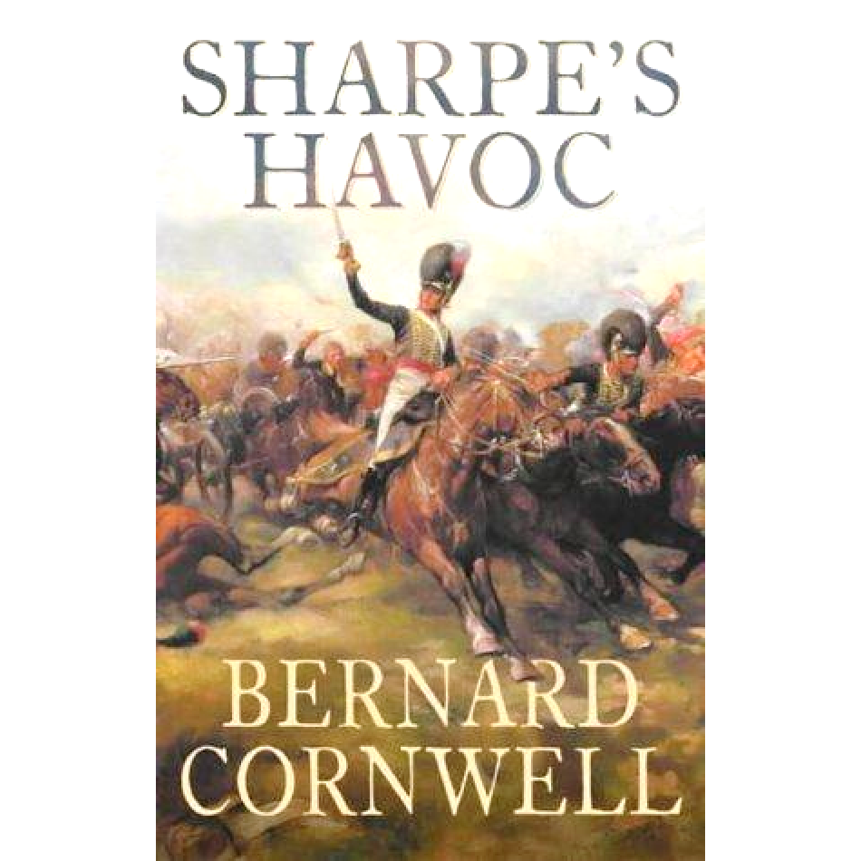
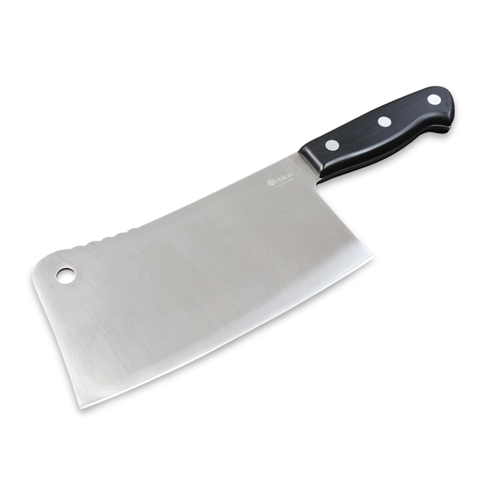
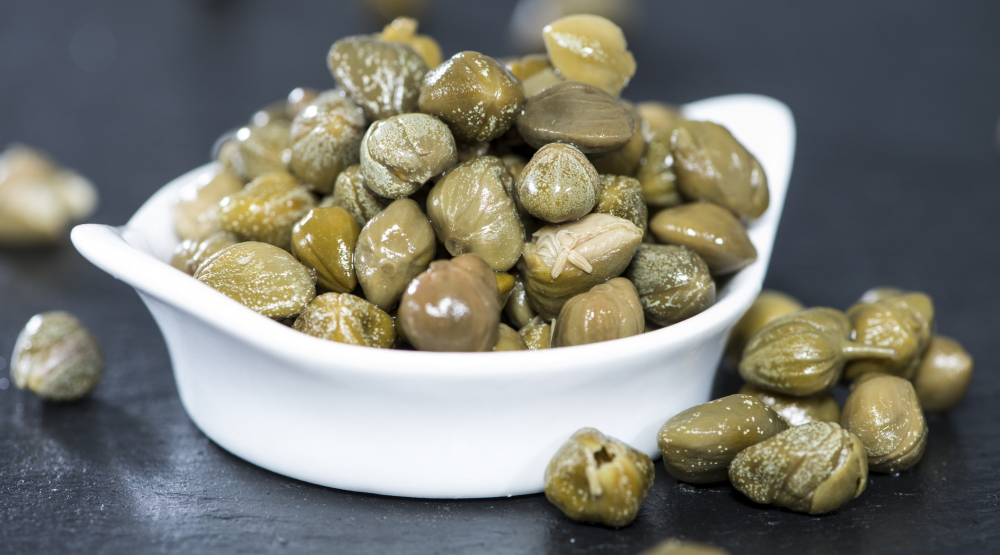
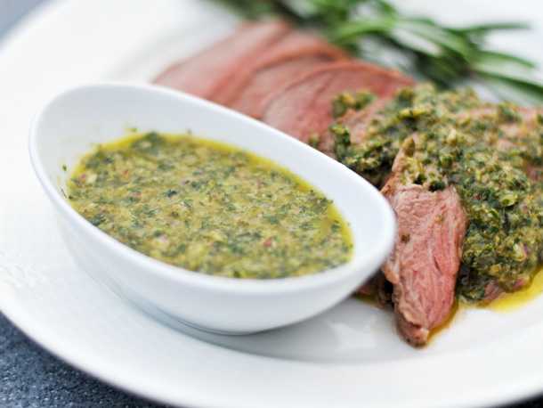
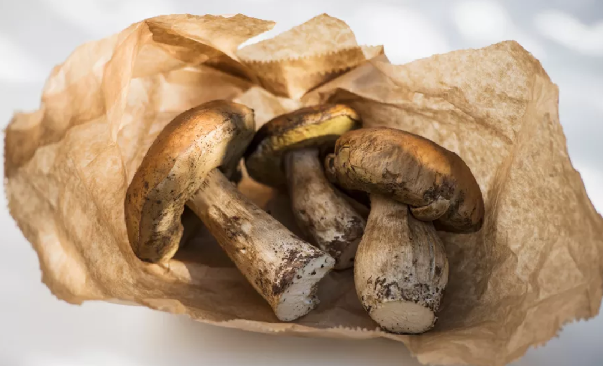
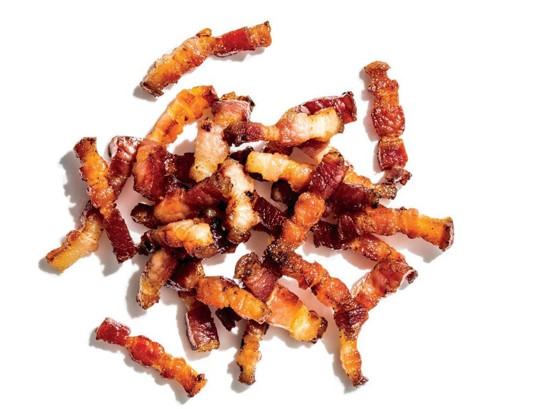
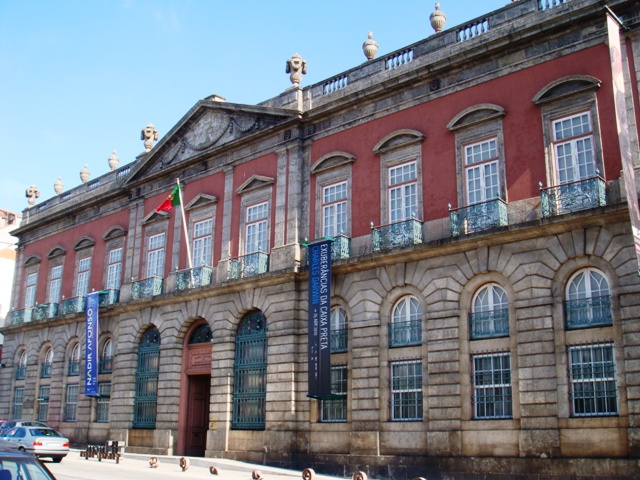

술트(Soult) 원수와 요리사 - Sharpe's Havoc 중 한 장면
게시: 2021-02-18T06:30:45+09:00
아래 발췌 번역된 소설은 영국 작가 Bernard Cornwell이 지은 나폴레옹 전쟁을 배경으로 한 어느 밑바닥 출신 장교의 모험담을 그린 역사 소설 Sharpe 시리즈 중 'Sharpe's Havoc' 편입니다. 이 장면 중에서, 웰링턴이 이 제2차 포루투(Porto) 전투를 치르고 난 뒤, 프랑스군 사령부의 오븐에서 발견된 따뜻한 요리를 저녁식사로 먹었다는 것은 역사적 사실이라고 합니다. 물론 나머지 부분은 모두 작가의 허구입니다. 이 장면에서 프랑스인과 영국인의 요리, 그리고 요리사에 대한 개념과 대우를 엿볼 수 있습니다.

Sharpe's Havoc by Bernard Cornwell (배경: 1807년, 포르투갈) ----------------- ( 포르투갈 포르투 시를 점령하고 있는 프랑스군의 술트 원수가 웰링턴이 이끄는 영국군의 기습을 받기 직전입니다. 참고로, 이 상황에서 술트도 강 건너에 영국군이 잔뜩 몰려와 있다는 것은 알고 있습니다. 다만 술트는 모든 보트를 다 자기 쪽 강변으로 모아 놓은 상태라서 당장은 영국군들이 도강을 못할 것이라고 생각하고 있습니다.)
터무니없는 콧수염을 기른 뚱뚱한 프랑스 병사가 방으로 들어왔다. 그는 벨트에 무시무시해보이는 육류용 칼을 꽂은 채, 피가 묻은 앞치마를 입고 있었다.

(보통 게임이나 영화에서 보면 이런 butcher's knife를 들고 있는 사람이 엄청 셉니다.)
"날 불렀나...요, 장군님." 그는 마지막 장군님이라는 경칭을 마지못해 쓴다는 듯한 목소리로 말했다. "아, 요리사가 왔군." 술트 원수는 의자를 뒤로 밀어내고 손을 비볐다. "데롱 중사, 저녁 준비를 해야지, 저녁 ! 16명을 접대할 생각인데, 뭐가 좋겠나 ?" "뱀장어가 있는데요." "뱀장어 !" 술트는 아주 행복한 듯이 말했다. "버터를 바른 화이팅(대구의 일종)과 버섯으로 속을 채워서 말이지 ? 아주 훌륭해." "그거 그냥 필렛으로 살을 뜰 건데요." 데롱 중사는 고집스럽게 말했다. "그리고는 파슬리와 함께 튀겨서 적포도주 소스와 함께 내놓을 겁니다. 주 요리로는 새끼양 고기가 있습니다. 아주 물이 좋습니다." "좋아 ! 난 새끼양 고기를 좋아한다구." 술트가 말했다. "케이퍼(caper) 소스를 준비할 수 있겠지 ?"

(케이퍼... 주로 식초에 절여서 나옵니다. 부페에서 훈제 연어 옆에 놓여있는 그거)

(Caper sauce입니다. 케이퍼와 올리브 오일, 후추와 소금, 그리고 레몬즙 또는 식초로 만듭니다.)
"케이퍼 소스라고요 !" 데롱 중사는 아주 역겹다는 듯이 말했다. "식초 때문에 새끼양 고기의 맛이 다 죽어버릴텐데요." 그는 화가 난다는 듯이 말했다. "이건 부드럽고 기름기도 많은 것이 아주 질이 좋은 새끼양 고기란 말입니다." "좋아, 좋아." 술트가 말했다. "거기에다 양파, 햄과 약간의 세페(Cèpe) 버섯으로 고명을 놓을 겁니다."

(세페 버섯입니다) 아주 큰일났다는 듯한 얼굴의 장교 하나가, 더위로 얼굴이 시뻘게진 채 땀을 뻘뻘 흘리며 방으로 들어왔다. "장군님 !" (역주: 지금 막 웰링턴의 영국군이 기습을 해오고 있는 중이라는 소식을 전하려는 것입니다.) "잠깐 기다리게." 술트는 얼굴을 찌푸리고 말하고는, 다시 데롱 중사를 쳐다보았다. "양파, 햄과 세페 버섯이라고 ?" 그는 요리사의 말을 반복했다. "라흐동(lardon)을 좀 넣으면 어떨까, 중사 ? 라흐동은 새끼양 고기와 아주 잘 어울리는데 ?"

(라흐동(lardon)이란 훈제 베이컨을 잘게 썰은 것인데, 요리에 돼지고기 특유의 향과 맛을 내는 고명 같은 재료로 사용됩니다.)
"저는 고명으로 잘게 썬 햄과, " 데롱은 냉정하게 반복했다. "약간의 양파와 세페 버섯을 사용할 겁니다." 술트가 마침내 굴복했다. "아주 맛있을 것 같군, 아주 맛있을 것 같아. 그리고 데롱 중사, 이 아침식사 아주 맛있었네. 고맙군." "막 내왔을 때 드셨으면 더 좋았을 겁니다." 데롱은 그렇게 말하더니 흥 하고 콧방귀를 뀌고는 밖으로 나가버렸다. 술트는 나가는 요리사의 등짝을 한동안 쳐다보고는, 새로 들어온 장교에게 으르렁거렸다. "자넨 브로사르 대위지 ? 응 ? 아침 좀 들겠나 ?" ...... 중략 ...... (결국 이날 오후 웰링턴의 영국군이 술트 원수의 프랑스군을 대파하고 술트의 본부를 점령합니다. 데롱 중사가 요리한 새끼양 고기는 그대로 웰링턴의 저녁상에 올라갑니다.)
그 질문은 카랑카스(Carancas) 궁의 푸른색 응접실에서 나온 것이었다. 거기서는 술트 원수를 위해 준비된 것이 분명한 음식을 웰링턴과 그의 참모진이 먹고 있었다. 그 요리는 궁전 주방의 오븐에서 아직 뜨거운 상태로 발견되었었다. 그 요리는 웰링턴이 좋아하는 양고기였는데, 다만 양파와 햄 조각, 그리고 버섯이 곁들여져 있었으므로 웰링턴의 입맛에는 맞지 않았다. "난 프랑스 애들이 요리에 일가견이 있다고 생각했었는데 말이지." 웰링턴은 툴툴거리면서 주방에서 식초를 가져오게 했다. 그는 식초를 양고기에 듬뿍 뿌리고는, 먹기 싫은 버섯과 양파를 긁어냈다. 그러고 난 뒤에야, 좀 먹을만 해졌다고 웰링턴은 생각했다.
(영국인들이 생선이든 육류든 모든 음식에 식초를 마구 뿌려 먹는 장면은 19세기 말을 배경으로 하는 서머셋 모음의 소설 '인간의 굴레'에도 잘 묘사됩니다. 사실 식초는 오래된 식재료의 군냄새를 잡아주기 떄문에 나름 훌륭한 양념이긴 합니다. 거의 우리나라의 마늘이나 생강에 해당하는 양념이지요. 고대 로마 군단 시절에도 군단병들의 정식 배급품 중에 채소는 전혀 들어있지 않았지만 식초는 꼭 들어있었습니다.)

(포르투 시내에 있는 카랑카스 궁전입니다. 지금은 Soares dos Reis (예술가 이름입니다) 국립 박물관이 되어 있습니다.)
** 목요일에 올리는 과거 재탕글입니다.